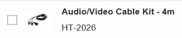

Editing Status
The editing status reflects the state of the object or entry in terms of the processing cycle. For example, it can give the user information about whether the item can be accessed or its level of completion.
|
Editing Status |
Description |
|---|---|
|
|
Draft: my own draft |
|
 |
Active version |
|
|
Active version with draft created by another user; no longer locked |
|
|
Active version with draft created by another user; locked |


Access to Administrative Data
For the statuses Unsaved Changes and Locked, the name of the user who last changed the object is visible directly in the line item in the list report (see above). Note that if the user's full name is not available in the master data in the back-end system, only the technical user name displays. If the technical name is also not available, the message then indicates that the unsaved changes or the lock on the object belongs to "another user".
As well, for the statuses Draft, Unsaved Changes, and Locked, a link accesses a popover to allow you to view the user who last changed the object and the time of the change. Note that if the user's full name is not available in the master data in the back-end system, only the technical user name displays.
Editing Status Filter
A static filter attribute is available for all applications, which is added to the smart filter bar of the list report for all draft-enabled applications by default. This filter allows users to search for objects or entries in a specific state.
| Drop-Down Value | Description |
|---|---|
|
All |
Shows all results except duplicates. This means that in the case of an edit draft, the drafts shall be shown but not the corresponding active version of the same document. |
|
Own Draft |
Shows the drafts that the current user can display or edit. |
|
Locked by Another User |
Shows the active versions that are locked by other users. The current user cannot edit these versions. |
|
Unsaved Changes by Another User |
Shows the active versions that were edited by other users, but are no longer locked. The current user can edit and overwrite these versions, and the previous draft will be overwritten. |
|
No Changes |
Shows active versions that have no corresponding draft. |
The default search filter is All, even if the user clears the filter value.
Disabling the Editing Status Filter
If desired, the editing status filter can be disabled after you generate your app. For information, see Disabling the Editing Status Filter.